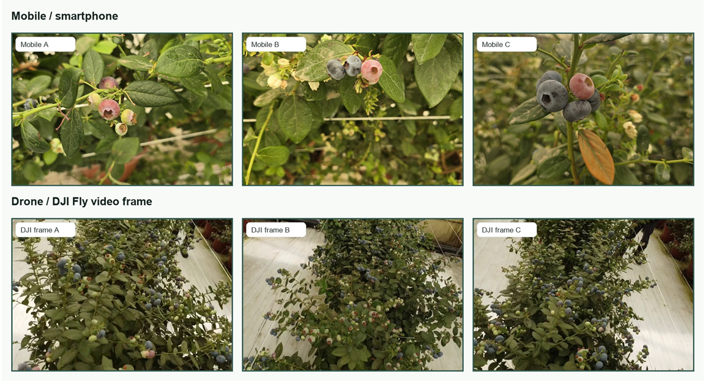
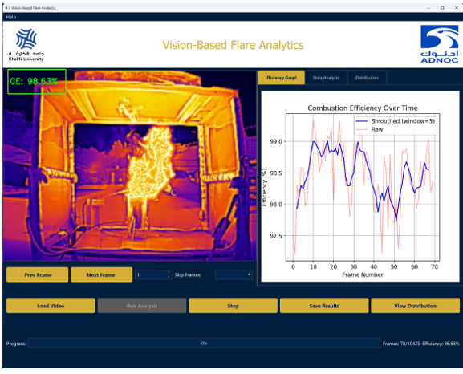
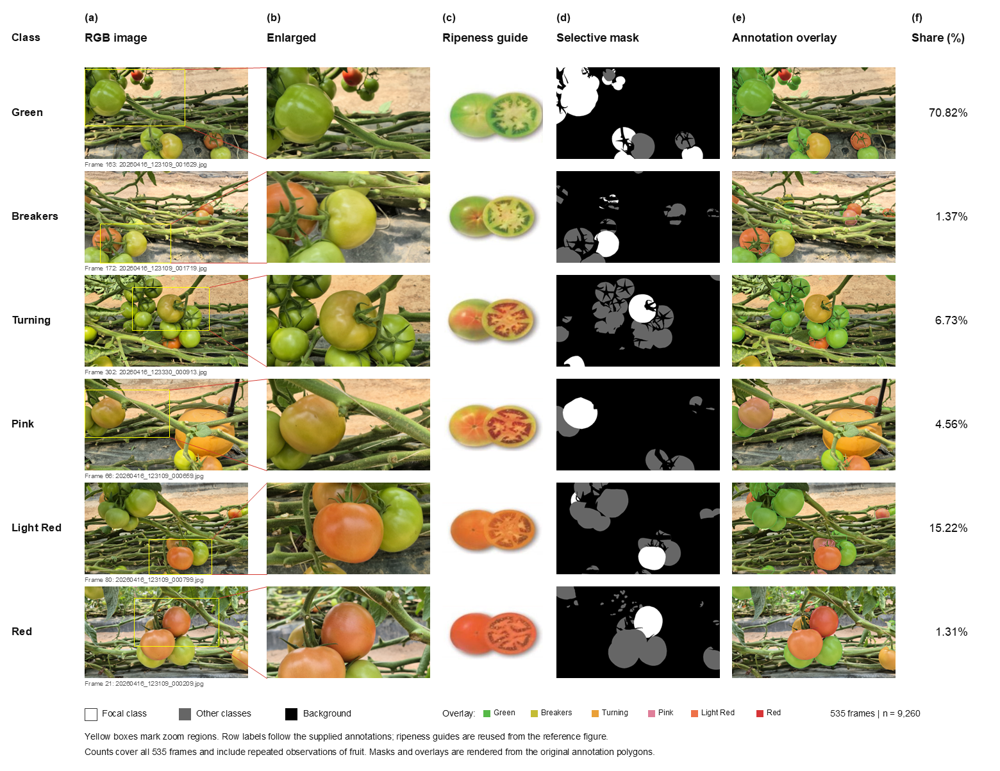
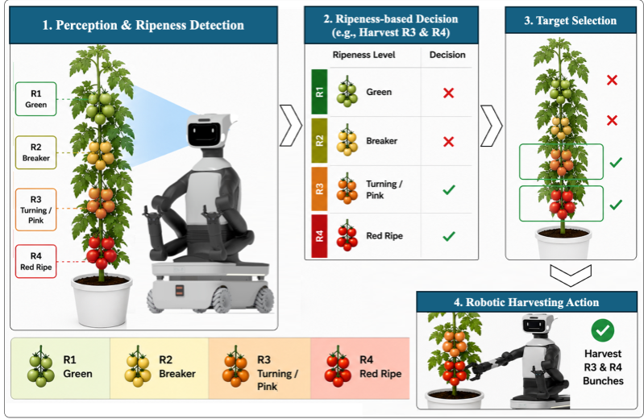
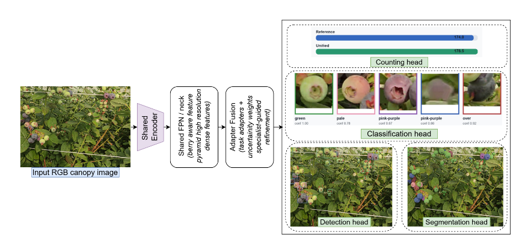
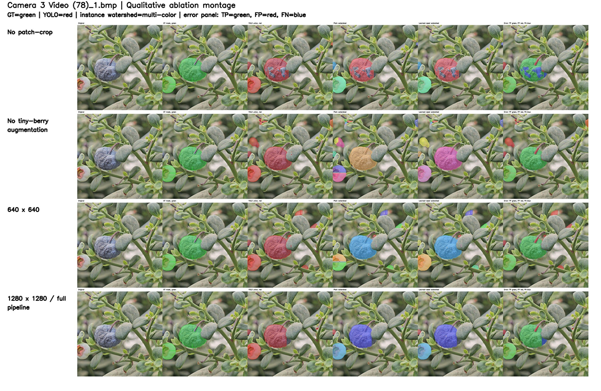
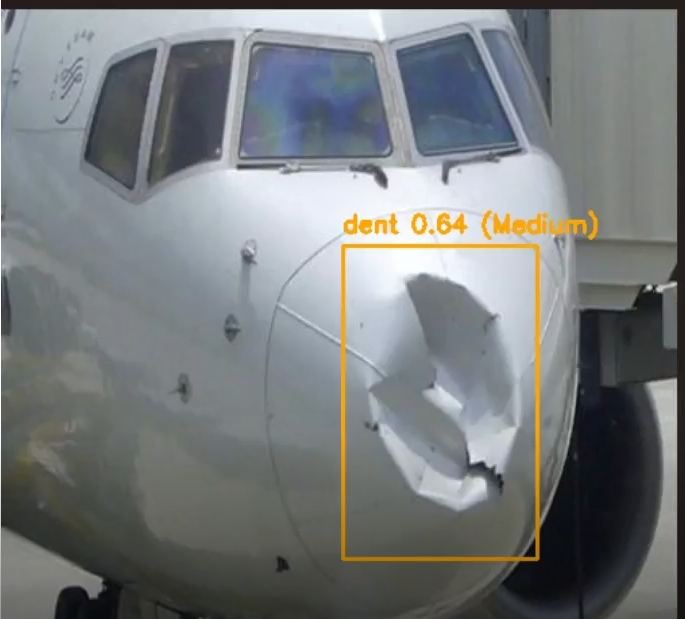

AerialYield-B2D: A Greenhouse Blueberry Dataset with Five-Stage Ripeness Masks and Fruit Counts
SubmittedScientific Data · arXiv preprint, 2026

Research Assistant, Khalifa University Abu Dhabi, UAE · with Prof. Yusra Abdulrahman and Prof. Irfan Hussain
I build vision systems that count, segment, and grade fruit in greenhouses from aerial and ground footage. My recent work covers blueberry and tomato datasets with stage-by-stage ripeness masks, lightweight segmentation for dense canopies, and benchmarks that weigh accuracy against what a model costs to run.
I'm also interested in vision-language models: adapting CLIP to greenhouse imagery with few labels, and more broadly in multimodal models for medical and scientific images.
Papers, datasets, and manuscripts in progress.






Abu Dhabi · Prof. Yusra Abdulrahman and Prof. Irfan Hussain
Abu Dhabi · Prof. Naoufel Werghi
Abu Dhabi
Hyderabad, India
Benchmarking deep models for fruit counting and ripeness assessment, plus a dashboard for exploring predictions, crop analytics, and yield estimates.
Inspection pipeline that localizes and classifies small surface anomalies, with a synthetic data generator linking blade images to 3D geometry.
Combines an image classifier with report parsing to compare pathology reports against biopsy slides and flag omissions or contradictions.
CLIP-based tomato ripeness classification with limited labels, using domain adaptation across greenhouse environments.

YOLOv8 pipeline for aircraft surface defects with preprocessing, augmentation, and evaluation. Undergraduate major project.
Chatbot that answers course questions and navigates the syllabus through a Gradio interface.
Stanley College of Engineering and Technology for Women · Hyderabad, India · GPA 8.0/10
I'm happy to talk about agricultural vision, datasets, vision-language models, or research collaborations.